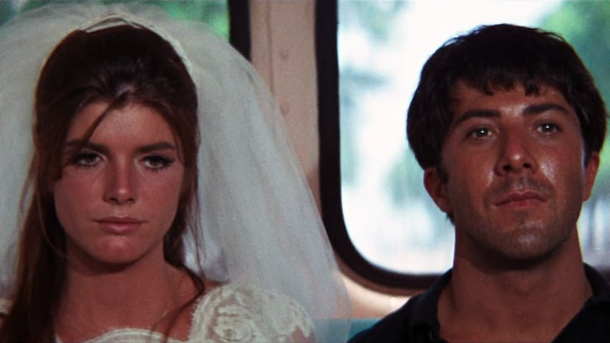

-
'The Graduate': What Now?
by Mitchel Green - May 17, 2023
|
mitchelgreen34@gmail.com

source: The Movie Database
For the first time in my life, I have no set path. My future is a canvas, and I have nearly every tool at my disposal to paint a masterpiece, but I have no idea where to begin. Part of the issue is I don't know what my seemingly unlimited options are, only that they're there. I got a very flexible degree so I wouldn't be boxed into doing one specific thing for the rest of my life, but now I'm realizing I need to pick a path anyway if I want to get ahead in my field. It's all so overwhelming.
I've been thinking about Mike Nichols's “The Graduate” a lot recently. I fired up the film almost immediately after turning in my final assignment last month, and I hoped I would respond to it better than I had when I first saw it in high school. I didn't care much for it back then, but this most recent viewing shook me.
Knowing what to expect certainly helped this time. The biggest roadblock for me was its status as one of the Great Comedies. Not that it isn’t funny, there are some hilarious lines and scenarios, but the jokes always felt like an afterthought. This film plays better for me as a drama with some humorous elements. That was at least what stuck with me about the film all these years after first seeing it. It is deeply tragic, and that sadness resonated with me more viewing “The Graduate” again.
Benjamin (Dustin Hoffman) as a character is fascinating. I hated him the first time I watched the film. His behavior toward Elaine (Katharine Ross) is creepy. His apathy towards everything is annoying. He is just a repulsive character. Watching it again, I still don't like Benjamin, but I do feel his pain. He is a lost young man, unable to find what makes him happy. It's a situation I've feared was coming throughout my final year of school, and now that I'm finished I'm beginning to feel that. How fulfilling is my life going to be if I can never figure out what to do with it? It's depressing to think about, and it can make it hard to care about anything when everything is so up in the air.
This sense of apathy is portrayed perfectly in my favorite sequence in the film. Benjamin, directionless and lonely, lounges around and lets life play out around him. He lies in the pool, he sits in bed while smoking and drinking, and he lies motionless as Mrs. Robinson (Anne Bancroft) undresses him. Nichols uses clean transitions between distant locations to make the viewer feel like Benjamin, that being directionless has caused him to lose all sense of time and space as he loses himself in a monotonous, unfulfilling routine. The use of the Simon and Garfunkel songs “Sound of Silence” and “April Come She Will” add an extra sense of longing for something more and make the sequence one of “The Graduate”'s most moving.
The ending of “The Graduate” is still its most devastating, and it's a testament to the greatness of the scene that I can see it parodied countless times elsewhere — from The Simpsons to Wayne's World 2 — and it doesn't lose an ounce of emotional weight. It all stems from one question, the same question the film has been trying to answer for its entire runtime: What now? Benjamin finally figures out what he wants, to be with Elaine, and takes drastic actions to get it. But when he and Elaine escape her wedding together, he runs into the exact question he's been contemplating since graduating from college. That uncertainty is exciting initially, but it soon turns to fear and anxiety. Nichols holds the shot of the couple in the back of the bus for an uncomfortably long time. This both allows the viewer time to see their smiles fade and makes the viewer as uncomfortable as the two characters. And when you're asking yourself the same question Benjamin and Elaine are in that moment, the devastation felt is intensified to an overwhelming degree.
One might think a film that felt so relevant to its time and place wouldn't age very well — I did for some reason, according to my initial Letterboxd review — but the film holds up remarkably well because the focus isn't on the culture of the late 60s, it's on Benjamin's emotions. Those feelings — of loneliness, alienation, aimlessness — transcend generation. Those were feelings that, while I may not have felt as deeply on first viewing, I certainly feel now as I’m entering this great transition period in my life. I don't know if I will ever feel the same watching “The Graduate” as I do right now. But much as it was for so many people back in 1967, it's the right film at the right time.
But as cathartic as seeing that feeling represented on screen was, I'm still left asking the same question: What now?